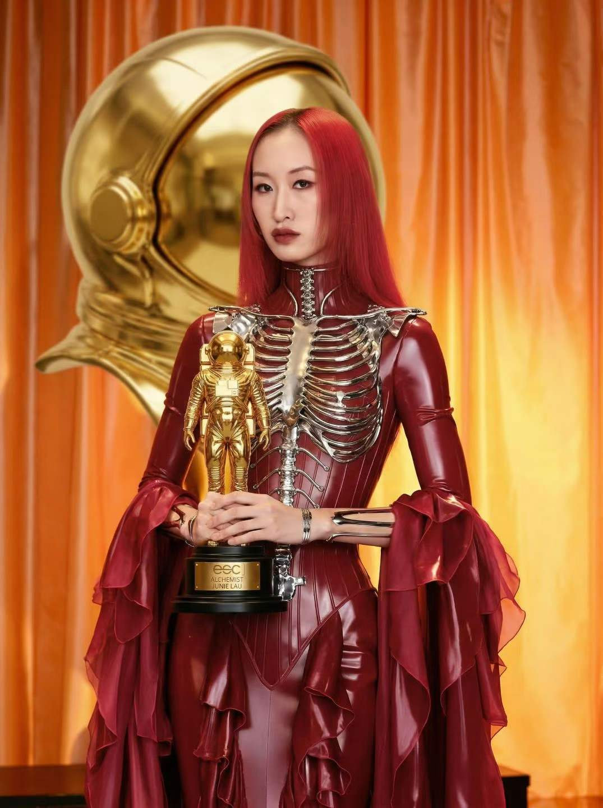

About关于
Director. Artist. Between London and Shanghai.
Lau
我并不是末日乐观主义者，
但是我仍然想继续创造世界。
I am not an Apocaloptimist, but I still want to keep creating worlds.

Junie Lau is a multidisciplinary creative based between London and Shanghai. As a director, she crafts futuristic visual narratives for leading global brands and celebrities across fashion films, music videos, and advertising.
Driven by a passion for innovation, she continually expands the boundaries of artistic expression through cutting-edge technology. By integrating AI into moving images, she has developed a post-digital cinematic language—avant-garde, ultra-modern, and deeply exploratory. Her works examine digital identity, humanities, and ontology, offering both emotional depth and critical reflection.
Her works have been exhibited at the Royal Academy of Arts and featured in British Vogue. Her music short The Court won the global championship at Stable Diffusion’s #DiffuseTogether contest, praised by six-time Grammy Award winner Peter Gabriel and international audiences. She also directed The Line Between Good and Evil, the theme MV for the Hong Kong movie I DID IT MY WAY (潜行).
Her AI short e^(iπ) + 1 = 0 won Silver at Runway’s International AI Film Festival, Best AI Application at France’s Artefact AI Festival, Best Film at the UK’s AIFA, and Best Hybrid Film at the AI Film Festival Amsterdam. It was invited to the 2024 Tribeca Film Festival and later toured major international festivals. That same year, she co-directed Our T2 Remake, the world’s first 90-minute independent AI feature, alongside 50 global filmmakers, which premiered in Hollywood.
Her AI short LOVE FROM VOID won Silver at Project Odyssey, the world’s largest AI film festival, and was officially selected for OpenAI’s Sora Select. Her Chanel collaboration BEFORE YOU LOVE ME, PLEASE LOVE YOURSELF FIRST won the Jury Award at Project Odyssey and was screened at Nvidia’s GTC Paris. As an official Google partner, she contributed to the development of Flow as AI Director. Her film Dear Stranger (浮生若梦) premiered on Google Flow TV at Google I/O. She was also invited as one of the first generative AI directors and IP partners at Promise Studio, expanding the future of AI filmmaking.
Recognized globally at the intersection of AI and artistic innovation—with collaborations with Google, OpenAI, Runway and Bytedance —she regularly speaks at major international AI summits. In both 2024 and 2025, she was a keynote speaker at the World Artificial Intelligence Conference (WAIC), China’s largest AI event. In 2025, she was invited as a visiting lecturer at Peking University and Tsinghua University, teaching AIGC and filmmaking, further cementing her influence and irreplaceable role in the global creative field.
Awards & Selections
- 2026Leonardo.Ai — 2026 Power List: Top 50 Women AI Filmmakers ↗2026.03.18
- 2025AIFA Awards (UK) — Best Filme^(iπ) + 1 = 0 · 2025.07.19 · London
- 2025Tribeca Film Festival 2025 — selection, with Google ↗Dear "Stranger" · made with Flow · 2025.06.13
- 2025NVIDIA GTC Paris — selectionChanel · BEFORE YOU LOVE ME, PLEASE LOVE YOURSELF FIRST · 2025.06
- 2025OpenAI Sora Selects — selectionLOVE FROM VOID · 2025.03.27 · Tokyo
- 2025Leonardo.Ai — Top 50 Women AI Artists ↗2025.03.06
- 2025Project Odyssey — SilverLOVE FROM VOID · Season 2 · Open Format
- 2025Project Odyssey — Jury AwardChanel · BEFORE YOU LOVE ME, PLEASE LOVE YOURSELF FIRST · Season 2
- 2024Artefact AI Festival (France) — Best AI Applicatione^(iπ) + 1 = 0 · 2024.11 · Paris
- 2024AI Film Festival Amsterdam — Best Hybrid Filme^(iπ) + 1 = 0
- 2024Tribeca Film Festival — invitede^(iπ) + 1 = 0 · 2024.06.08
- 2024Runway International AI Film Festival — Silvere^(iπ) + 1 = 0
- 2023Stable Diffusion #DiffuseTogether — global championshipThe Court · Peter Gabriel
Selected Projects
- 2026Goldfish Mayhem — film IPwith Wonder Studios · 2026.09.10
- 2026Clarins — fashion short film2026.08.31
- 2026MADAM PINK — film IPwith Mujian Yinghua · premiered at the Shanghai International Film Festival · 2026.06.21
- 2026HAPPYHORSE — short film “Until the Body Becomes Wilderness”2026.05.18
- 2026Yili Ambrosial — short film “EDEN: Vanished into the Backrooms”2026.05.02
- 2026LIBLIB — short film AURAE2026.03.21
- 2026360 — short film “Infinite Frame Rate”2026.02.14
- 2025ByteDance — ONE BLINK2025.12.30
- 2025Tencent Starlight Ceremony — fashion film2025.12.21
- 2025REVAN — artist collaboration short film & exhibition2025.09.08
- 2025Google — official partner, AI Director on the development of FlowDear "Stranger" launched as the exclusive cover film of Google Flow TV · 2025.05.20
- 2025Promise Studio — one of the first signed generative AI directors & IP partnerOriginal IPs: Scarlet Magnolia · ZEЯRO · 51IST
- 2025Chanel — AI short filmBEFORE YOU LOVE ME, PLEASE LOVE YOURSELF FIRST · 2025.01.06
- 2024LOVE FROM VOID — AI short film2024.12.15
- 2024Culture POP Soda — AI commercial2024.08.26
- 2024Peter Gabriel — Road to JOYMusic video · 2024.07.13
- 2024Andy Lau “Today... is the Day” concert tour — visuals2024.07.03
- 2024Our T2 Remake — co-directorMade with 50 of the world's top AI filmmakers · the world's first 90-minute AI feature, premiered in Hollywood · 2024.03.06
- 2023The Line Between Good and Evil — AI MVTheme song of the film I Did It My Way, by Andy Lau & George Lam · 2023.12.22
- 2023Sohu Fashion Gala — AI micro-film e^(iπ) + 1 = 0Made for Sohu's 25th-anniversary fashion gala · 2023.12.21
- 2023Peter Gabriel — The CourtAI MV on the official channel of six-time Grammy winner Peter Gabriel · 2023.09.11
- 2023AI short on AGI & digital lifeWith a brain-science researcher, using NeRFs & Gaussian Splat
- 2023Luminous Odyssey — AI fashion collectionThe first international AI Fashion Week · 2023.04.20
Education
- 2018–20MA Fashion Media Production, with DistinctionUniversity of the Arts London
Speaking
- 2026ZCOOL Design Week 2026 — keynote speaker2026.10.29 · Beijing · The best way to predict the future is to create it
- 2026Tsinghua University — visiting lecturer
- 2025Peking University — visiting lecturerAIGC & filmmaking
- 2025Tsinghua University — visiting lecturerAIGC & filmmaking
- 2025World Artificial Intelligence Conference (WAIC) — keynote speaker
- 2025Tribeca Film Festival — panelist ↗Behind the Lens: AI Filmmaking with Flow from Google
- 2025Goethe-Institut — AI lecture, lecturer ↗2025.01.10 · How can artificial intelligence be leveraged to produce images that are uniquely generable by AI?
- 2024Roca Gallery AI event — keynote & panel speaker ↗2024.10.30 · Creative story telling and design through generative
- 2024Civitai Creator Session — live session ↗2024.10.04 · AI driven storytelling in Commercials & Music Video
- 2024Ultra Hong Kong — panel speaker ↗2024.09.28 · Future & Remix: How AI Reshapes Content Creation
- 2024Runway Meetup Beijing — organizer ↗2024.09.28 · Runway Chinese community
- 2024Runway Meetup Shanghai — organizer ↗2024.09.22 · Runway Chinese community
- 2024World Artificial Intelligence Conference (WAIC) — keynote speaker2024.07.03
- 2024Tribeca Film Festival — panel speaker ↗2024.06.08 · Human Powered: AI Shorts Program
- 2024Qidi Star AI event — panel speaker ↗2024.03.29 · What Are We Talking About When We Talk About Sora?
Research
AI is not only changing how images are produced — it is creating a form of dynamic media that has never existed before.
Neural Media Tracker An independent bilingual tracker of public sources on Neural Media, a concept by K Allado-McDowell: AI-era media that sense us, model us and generate content back at us. Videos, posts, essays, interviews, talks, exhibitions and books, newest first. Open tracker→Brands
Technology partners
Institutions, festivals & studios
Contact
For films, campaigns, talks and press, write to Junie here. She replies by email.
Work with Junie
Thank you. Your message has been sent. Junie will reply by email.